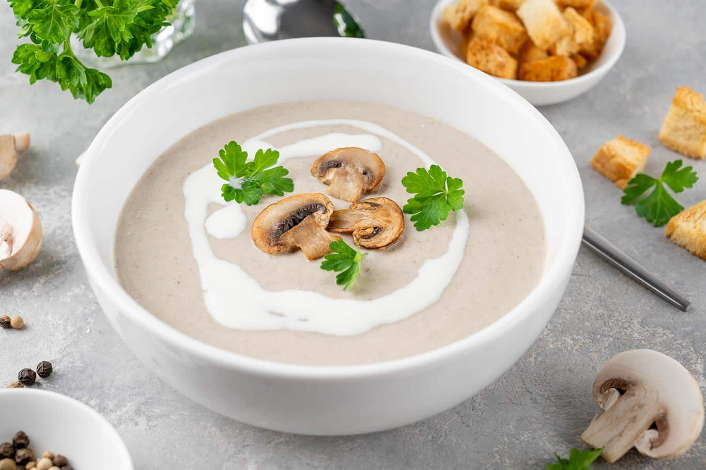

Crema de Champiñones con Tostadas de Ajo

Pasos :
- En una cacerola, derrite la manteca y saltea el ajo hasta que esté fragante.
- Añade los champiñones y cocina hasta que estén tiernos.
- Agrega la harina y mezcla bien para hacer un roux.
- Vierte lentamente la leche, revolviendo constantemente para evitar grumos.
- Cuando la mezcla espese, sazona con sal, pimienta y nuez moscada al gusto.
- Sirve la crema de champiñones sobre tostadas de ajo crujientes.
Ingredientes :
- Manteca
- Ajo
- Champiñones
- Harina
- Leche
- Nuez moscada
- Tostadas de ajo